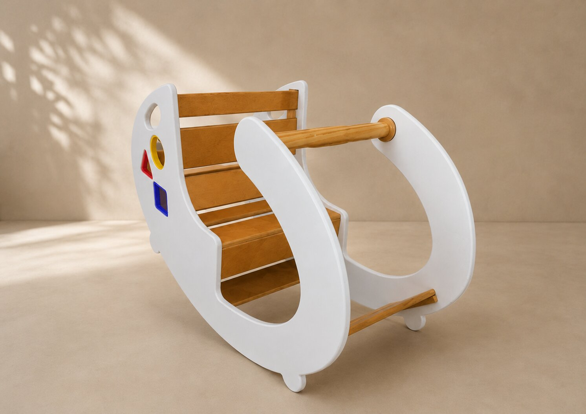

Balancín interactivo para el aprendizaje temprano

Combinar movimiento y aprendizaje en una misma experiencia.
Niños de 1 a 5 años.
Incorporé piezas geométricas encastrables para estimular el reconocimiento de formas mientras el niño juega y explora.
Aprendí a incorporar objetivos educativos dentro de una experiencia lúdica sin perder simplicidad ni diversión.